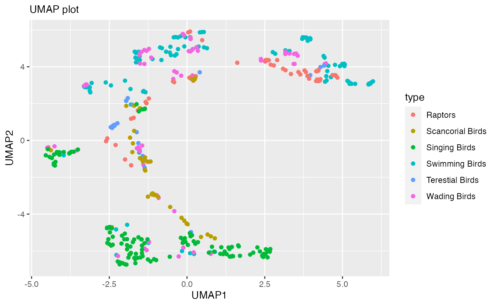

umapgp-vignette
umapgp-vignette.RmdRationale
Uniform Manifold Approximation and Projection (UMAP) preserves local structure by grouping neighboring data points together which provides an informative visualization of heterogeneity in a dataset. However, if one wants to understand the relationship between clusters of data points, this can be troublesome since UMAP does not warrant that inter-cluster distances are preserved correctly. To address this shortcoming, we have created a package, UMAPgp which preserves the global structure of manifold learning algorithms without losing the finer details. The developed package is suited to process small datasets with approximately 5,000 data points.
Significance/ Innovation
Preservation of global structure in manifold learning algorithms will ensure that UMAP represents the big-picture while not losing the fine details hence, better visualization. Based on the project results, we created an R package that computes Uniform Manifold Approximation and Projection (UMAP) while preserving global structures.
Addressing Aim 1 and Aim 2
In this section, we shall load the required packages and import the dataset ‘Iris’ which shall be used for the purpose of this project. We will work towards visualizing the dataset alongwith preprocessing it to perform UMAP. Additionally, we shall create the UMAP plot and check if the distances and shape of the clusters have been preserved. This shall address our Aim 1 and Aim 2.
Importing dataset
data("iris")
iris %>% slice_head(n=5)
#> Sepal.Length Sepal.Width Petal.Length Petal.Width Species
#> 1 5.1 3.5 1.4 0.2 setosa
#> 2 4.9 3.0 1.4 0.2 setosa
#> 3 4.7 3.2 1.3 0.2 setosa
#> 4 4.6 3.1 1.5 0.2 setosa
#> 5 5.0 3.6 1.4 0.2 setosaA plot of variables of interest
ggplot(data = iris, aes(x = Petal.Length, y = Petal.Width))+
xlab("Petal Length")+
ylab("Petal Width") +
geom_point(aes(color = Species,shape=Species))+
geom_smooth(method='lm')+
ggtitle("Iris Petal Length vs Width")
#> `geom_smooth()` using formula 'y ~ x'Preprocessing the data for UMAP
# Adding a unique row ID
iris <- iris %>%
mutate(ID=row_number())
# Creating a dataframe with all categorical variables with the unique row ID
iris_meta <- iris %>%
select(ID, Species)Performing UMAP
set.seed(142)
umap_fit <- iris %>%
select(where(is.numeric)) %>%
column_to_rownames("ID") %>%
scale() %>%
umap()
umap_df <- umap_fit$layout %>%
as.data.frame()%>%
rename(UMAP1="V1",
UMAP2="V2") %>%
mutate(ID=row_number())%>%
inner_join(iris, by="ID")UMAP Plot
original_umap_plot <- umap_df %>%
ggplot(aes(x = UMAP1,
y = UMAP2,
color = Species))+
geom_point()+
labs(x = "UMAP1",
y = "UMAP2",
subtitle = "UMAP Plot")
original_umap_plotChecking Aim 1
To quantify the global structure by establishing preservation of distances between clusters.
Correlation of original with reconstructed distances between data points
Null hypothesis:- There is no correlation between original and reconstructed distances between data points.
Alternative hypothesis:- There is correlation between original and reconstructed distances between data points.
# Pearson is most appropriate for measurements taken from an interval scale
# Spearman is more appropriate for measurements taken from ordinal scales.
cor.test(iris$Petal.Length, umap_df$UMAP1, method = 'pearson')
#>
#> Pearson's product-moment correlation
#>
#> data: iris$Petal.Length and umap_df$UMAP1
#> t = -4.251, df = 148, p-value = 3.752e-05
#> alternative hypothesis: true correlation is not equal to 0
#> 95 percent confidence interval:
#> -0.4655218 -0.1790757
#> sample estimates:
#> cor
#> -0.3298703
cor.test(iris$Petal.Width, umap_df$UMAP2, method = 'pearson')
#>
#> Pearson's product-moment correlation
#>
#> data: iris$Petal.Width and umap_df$UMAP2
#> t = 19.127, df = 148, p-value < 2.2e-16
#> alternative hypothesis: true correlation is not equal to 0
#> 95 percent confidence interval:
#> 0.7904117 0.8844487
#> sample estimates:
#> cor
#> 0.8437884The result shows the p-value of less than 0.05 hence we reject the null hypothesis and conclude that there is a correlation between original and reconstructed distances between data points.
Preservation of pairwise Mahalanobis distances between clusters
g1 <- iris[3:4]
g2 <- umap_df[1:2]
D.sq <- function (g1, g2) {
dbar <- as.vector(colMeans(g1) - colMeans(g2))
S1 <- cov(g1)
S2 <- cov(g2)
n1 <- nrow(g1)
n2 <- nrow(g2)
V <- as.matrix((1/(n1 + n2 - 2)) * (((n1 - 1) * S1) + ((n2 - 1) * S2)))
D.sq <- t(dbar) %*% solve(V) %*% dbar
res <- list()
res$D.sq <- D.sq
res$V <- V
res
}
D.sq(g1,g2)
#> $D.sq
#> [,1]
#> [1,] 4.738184
#>
#> $V
#> Petal.Length Petal.Width
#> Petal.Length 4.084087 -3.368446
#> Petal.Width -3.368446 17.213024The mahalanobis distance between clusters is 3.7158. We will therefore aim to achieve mahalanobis Distance of 1 or lower so that the data point are right among the benchmark points.
Checking Aim 2
To investigate preservation of the shapes of the clusters as another measure of global structure.
Constructing the bounding boxes
# The bounding boxes around the original clusters
ggplot() +
geom_point(data = iris, aes(x = Petal.Length, y = Petal.Width, color = Species))+
xlab("Petal Length")+
ylab("Petal Width") +
ggtitle("Iris Petal Length vs Width") +
geom_tile() +
geom_text() +
geom_rect(aes(xmin = 0.8, xmax = 2.2, ymin = 0, ymax = 0.8),
fill = "transparent", color = "red", size = 1.5) +
geom_rect(aes(xmin = 2.7, xmax = 5.2, ymin = 0.8, ymax = 1.9),
fill = "transparent", color = "green", size = 1.5) +
geom_rect(aes(xmin = 4.4, xmax = 7.1, ymin = 1.2, ymax = 2.7),
fill = "transparent", color = "blue", size = 1.5) +
theme_bw()+
theme(legend.position = "bottom")
# The bounding boxes around the reconstructed clusters
ggplot() +
geom_point(data = umap_df, aes(x = UMAP1, y = UMAP2, color = Species)) +
labs(x = "UMAP1",
y = "UMAP2",
subtitle = "UMAP Plot")+
geom_tile() +
geom_text() +
geom_rect(aes(xmin = -5, xmax = 0.0, ymin = -9, ymax = -4),
fill = "transparent", color = "red", size = 1.5) +
geom_rect(aes(xmin = -2.5, xmax = 2.4, ymin = 0.5, ymax = 5.5),
fill = "transparent", color = "green", size = 1.5) +
geom_rect(aes(xmin = -2.0, xmax = 4.7, ymin = 0.6, ymax = 5.5),
fill = "transparent", color = "blue", size = 1.5) +
theme_bw()+
theme(legend.position = "bottom")Pearson correlation coefficient between the sizes of the bounding boxes
Null hypothesis:- There is no correlation between original and reconstructed shapes of the clusters.
Alternative hypothesis:- There is correlation between original and reconstructed shapes of the clusters.
originalHeight<- c(0.8, 1.1, 1.5)
reconstructedHeight<-c(5,5,4.9)
cor.test(originalHeight, reconstructedHeight, method = 'pearson')
#>
#> Pearson's product-moment correlation
#>
#> data: originalHeight and reconstructedHeight
#> t = -2.117, df = 1, p-value = 0.2809
#> alternative hypothesis: true correlation is not equal to 0
#> sample estimates:
#> cor
#> -0.9041944
originalWidth<-c(1.4,2.5,2.7)
reconstructedWidth<-c(5,4.9,6.7)
cor.test(originalWidth, reconstructedWidth, method = 'pearson')
#>
#> Pearson's product-moment correlation
#>
#> data: originalWidth and reconstructedWidth
#> t = 0.71014, df = 1, p-value = 0.6069
#> alternative hypothesis: true correlation is not equal to 0
#> sample estimates:
#> cor
#> 0.5789983The result shows the p-value of 0.2809 and 0.6069 which are greater than 0.05 hence we fail to reject the null hypothesis and conclude that there is no correlation between original and reconstructed clusters. We will therefore aim to achieve correlation between original and reconstructed clusters.
The current UMAP package has a minimum distance of 0.5 and n_neighbors of 15. Our UMAP package contains minimum distance of 0.3 and n_neighbors of 70. Our package achieves preservation of global structure in Uniform Manifold Approximation and Projection (UMAP) by :-
- Attaining mahalanobis Distance of 1 so that the data point are right among the benchmark points.
- Accomplishing a correlation between the original and reconstructed clusters.
Demonstration of how to use the function ‘UMAPgp’
This section shall involve defining our function and the parameters to be passed. We shall preprocess the dataset for UMAP and create a dataframe with all the categorical variables with the unique row ID. We shall then perform UMAP and create the UMAP plot to demonstrate the practical usage of the function UMAPgp.
# Defining the function and the parameters to be passed
umapgp<-function(var,data){
# Pre-processing the dataset for UMAP
data <- data %>%
mutate(ID=row_number())
# Creating a dataframe with all the categorical variables with the unique row ID
data_meta <- data %>%
select(ID, var)
# Performing UMAP
set.seed(142)
umap_fit <- data %>%
select(where(is.numeric)) %>%
column_to_rownames("ID") %>%
scale() %>%
umap(n_neighbors=70,min_dist=0.3)
umap_df <- umap_fit$layout %>%
as.data.frame()%>%
rename(UMAP1="V1",
UMAP2="V2") %>%
mutate(ID=row_number())%>%
inner_join(data_meta, by="ID")
umap_df$var<- data[, var]
# Creating the UMAP Plot
umapplot<-umap_df %>%
ggplot(aes(x = UMAP1,
y = UMAP2,
color = var))+
geom_point()+
labs(x = "UMAP1",
y = "UMAP2",
subtitle = "UMAP plot")
return(umapplot)
}Real-life example
We shall now use a different dataset ‘birds’ and apply our newly developed package to the dataset to demonstrate the functionality of umapgp. We shall also draw comparisons between the UMAP plots created using the umap and the umapgp functions.
Loading the dataset and creating a plot of variables of interest
# Importing the dataset
library(readr)
##checking and reading the data
fpath <- system.file("extdata","birds.csv", package="UMAPgp")
birds<-read.csv(fpath)
birds %>% slice_head(n=5)
#> id huml humw ulnal ulnaw feml femw tibl tibw tarl tarw type
#> 1 0 80.78 6.68 72.01 4.88 41.81 3.70 5.50 4.03 38.70 3.84 Swimming Birds
#> 2 1 88.91 6.63 80.53 5.59 47.04 4.30 80.22 4.51 41.50 4.01 Swimming Birds
#> 3 2 79.97 6.37 69.26 5.28 43.07 3.90 75.35 4.04 38.31 3.34 Swimming Birds
#> 4 3 77.65 5.70 65.76 4.77 40.04 3.52 69.17 3.40 35.78 3.41 Swimming Birds
#> 5 4 62.80 4.84 52.09 3.73 33.95 2.72 56.27 2.96 31.88 3.13 Swimming Birds
# A plot of variable of interest
ggplot(data = birds, aes(x = huml, y = humw))+
xlab("Humurus Length")+
ylab("Humurus Width") +
geom_point(aes(color = type,shape=type))+
geom_smooth(method='lm')+
ggtitle("Birds Humurus Length vs Width")
#> `geom_smooth()` using formula 'y ~ x'Performing UMAP
## Preprocessing the data for UMAP
# Adding a unique row ID
birds <- birds %>%
mutate(id=row_number())
# Creating a dataframe with all categorical variables with the unique row ID
Birds_meta <- birds %>%
select(id, type)
## Performing UMAP
set.seed(142)
umap_fit <- birds %>%
select(where(is.numeric)) %>%
column_to_rownames("id") %>%
scale() %>%
umap()
umap_df <- umap_fit$layout %>%
as.data.frame()%>%
rename(UMAP1="V1",
UMAP2="V2") %>%
mutate(id=row_number())%>%
inner_join(birds, by="id")
### UMAP Plot
umap_df %>%
ggplot(aes(x = UMAP1,
y = UMAP2,
color = type))+
geom_point()+
labs(x = "UMAP1",
y = "UMAP2",
subtitle = "UMAP plot")
Performing UMAPgp
library(UMAPgp)
umapgp(var="type", data=birds)
#> Note: Using an external vector in selections is ambiguous.
#> ℹ Use `all_of(var)` instead of `var` to silence this message.
#> ℹ See <https://tidyselect.r-lib.org/reference/faq-external-vector.html>.
#> This message is displayed once per session.In conclusion, the UMAPgp package preserves the global structures better compared to the original UMAP package.
References
- Leland McInnes, John Healy & James Melville UMAP: Uniform Manifold Approximation and Projection for Dimension Reduction (https://arxiv.org/pdf/1802.03426.pdf)
- https://towardsdatascience.com/how-exactly-umap-works-13e3040e1668
- https://towardsdatascience.com/why-umap-is-superior-over-tsne-faa039c28e99
- https://towardsdatascience.com/how-to-program-umap-from-scratch-e6eff67f55fe
- https://www.ncbi.nlm.nih.gov/pmc/articles/PMC8547469/